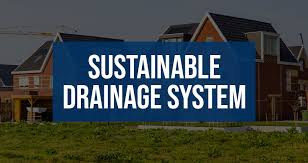

Sustainable Practices
Discover Sustainable Drainage Practices
Overview of Sustainable Drainage: Sustainable drainage systems (SuDS) are designed to manage water runoff in an environmentally friendly way by mimicking natural processes.
Key Sustainable Drainage Techniques:
- Bioretention Systems: Filter and absorb stormwater using vegetation.
- Permeable Pavements: Reduce runoff by allowing water to infiltrate the ground.
- Constructed Wetlands: Naturally treat and store excess water.
- Swales: Shallow channels that slow and filter water.
Benefits of Sustainable Drainage:
- Reduces flood risks and water pollution.
- Enhances biodiversity and green spaces.
- Improves groundwater recharge.
- Reduces urban heat effects.
Challenges in Implementing Sustainable Drainage:
- High Initial Costs: Installation can be expensive.
- Space Requirements: Some techniques require large areas.
- Maintenance Needs: Vegetation-based systems need regular care.
- Public Awareness: Lack of understanding can hinder adoption.

Conclusion: Sustainable drainage practices help create resilient urban and rural environments by managing water efficiently and reducing environmental impacts.